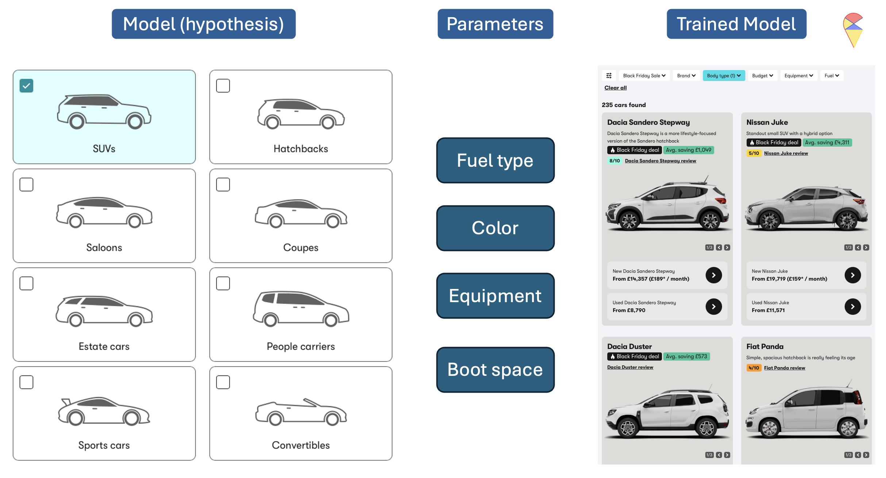
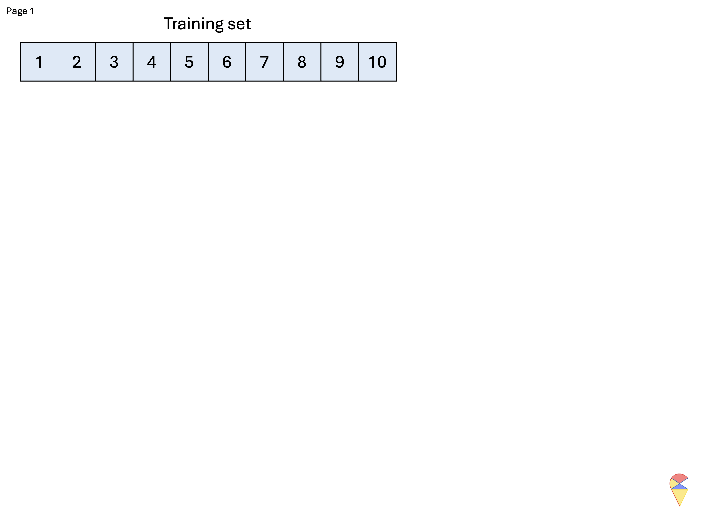
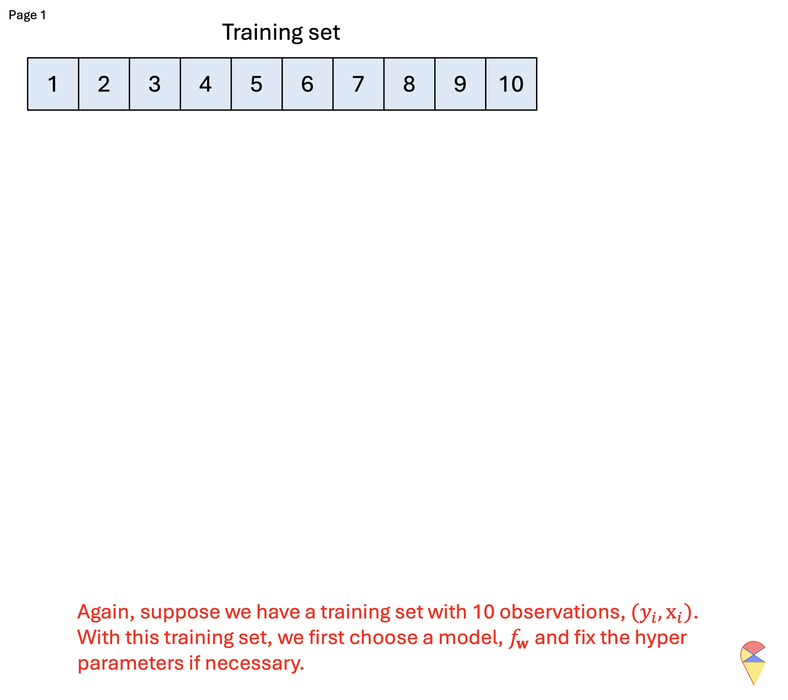
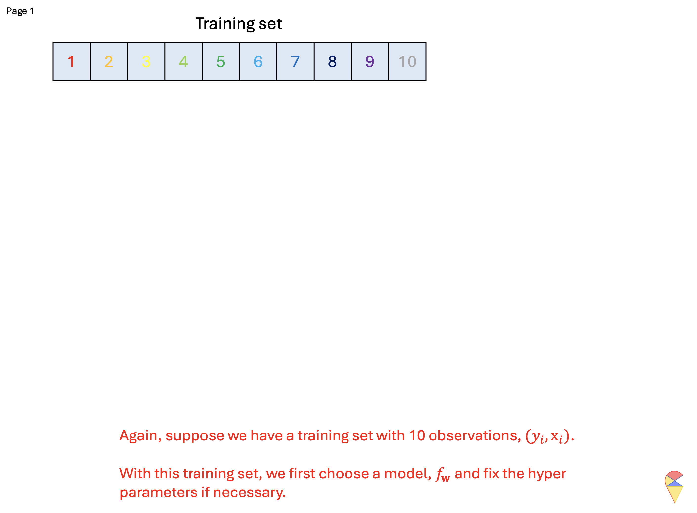

2. Model Validation and Selection
2.1 Hyper-parameters
Think of a machine learning model like a car. Cars come in broad categories, such as SUVs, Hatchbacks, Sports cars, etc., each designed for a specific purpose. Within these categories, there are further variations, for instance, an SUV might be a compact crossover, a mid-size, or a full-size SUV, and the specific features like engine size or drivetrain vary between models.

Similarly, machine learning models have different types or families, often referred to as hypotheses. Examples that we have studied so far include linear regression, polynomial regression, Gaussian Discriminant Analysis (GDA), k-Nearest Neighbors (KNN), and so on. Each family represents a broad class of models. However, within each family, the exact form of the model depends on parameters that we choose or estimate. For example, in linear regression, we need to determine the slope and intercept of the line; in polynomial regression model, we need to determine the order of polynomial terms and estimate the regression coefficients; in GDA, we need to determine the assumption of contrivance structure and estimate the weights for each feature, and so on. Among the many parameters, we can further divide them into two categories: model parameters and hyper-parameters.
Model Parameters: These are the parameters that the model learns directly from the data during training. Once the model structure is decided, these parameters can be computed using algorithms. Examples include regression coefficients in linear regression, feature weights in GDA, and so on.
Hyper-parameters: These are parameters that need to be set before the model is trained. They control aspects of the model or the learning process itself. Examples include the degree of the polynomial in polynomial regression or the value of \(k\) in KNN. Unlike model parameters, hyper-parameters are not learned from the data directly but require careful tuning through methods like cross-validation.
In essence, building and training a machine learning model involves selecting a model type, defining its structure through hyper-parameters, and then using data to learn the model parameters. Before we begin training a model using data, we need not only to choose the type of model but also to determine the hyper-parameters that can not be set by the algorithm itself. In other words, determining the optimal values for hyper-parameters is essentially a model selection problem.
Recall: In previous labs, we used the so-called brute-force method, the grid search method, to estimate the parameters of regression models. Do you sense a similar vibe here? In other words, without those clever algorithms, wouldn’t the coefficients of a regression model also become hyper-parameters?
2.2 Model Validation Methods
From the above process of tuning hyper-parameters, the most critical step is Step 3, which is how to evaluate the trained model. Of course, choosing an appropriate model performance metric is important, but even more crucial is avoiding the trap of over fitting. So, how can we evaluate a model to avoid over fitting? If you recall the main characteristic of over fitting (excellent performance on the training set but poor performance on the test set), the conclusion becomes clear. The principle is:
Principle: Avoid using the training set to evaluate the trained model.
Specifically, if a sample set is involved in model training, it should not be used for model evaluation. Based on this principle, we have the following methods for evaluating model performance: the validation set approach, cross-validation approach, and bootstrap method.
2.2.1 The Validation Set Approach
The validation set approach is a simple method for model evaluation where the dataset is split into two parts: typically, 80% for training the model and 20% for validation to assess its performance. This allows us to test the model on unseen data and estimate its generalization ability. Recall that in the previous lab, we have actually applied this approach to find the best polynomial regression model.
However, this approach has some notable drawbacks. The performance evaluation can be highly sensitive to how the data is split, as different splits may lead to varying results. Additionally, since only a portion of the data is used for training, the model might not fully leverage all available information, potentially reducing its performance.
To address these limitations, we can use cross-validation methods, which provide a more robust and reliable estimate of model performance by systematically rotating through different training and validation splits.
2.2.2 Cross Validation Methods
While adhering to the principle of model validation, we can adopt a more flexible approach to defining the training set and validation set. To ensure that all samples contribute to both model training and evaluation, we can dynamically adjust these two sets. There are two methods in this category, i.e. leave one out cross validation and k-fold cross validation
Leave One Out Cross Validation (LOOCV)
In this method, the validation set is iteratively defined: each iteration holds out one sample as the test set, while the remaining samples are used to train the model. The model is then evaluated by making a prediction on the held-out sample, and the prediction error is recorded. By iteratively recording the prediction errors for all dynamic validation sets, we can aggregate these errors using an appropriate evaluation metric to compute the final cross-validation results.
Below is the corresponding pseudo-code and demo for this approach.
Pseudo-code of LOOCV:
# n: training sample size
cv_res = numeric(n) # for keeping all the cross validation errors
for(i in 1:n){
model = Algorithm(dat[-i,]) # 'dat' contains y and x
cv_res[i] = dat$y[i] - model(dat$x[i])
}
CV_performance = metric(cv_res)Animation-Demo of LOOCV:

The main drawback of LOOCV is its computational cost, as the model must be trained as many times as there are data points, which can be inefficient for large datasets. Additionally, LOOCV may result in high variance in error estimates due to its reliance on a single data point for validation in each iteration.
K-fold Cross Validation (kFCV)
To address these issues, kFCV offers a more efficient alternative by randomly splitting the dataset into k equally sized folds, allowing multiple samples to be used for validation in each iteration, reducing computational cost and variance. Below is the corresponding pseudo-code and demo for this approach.
Pseudo-code of KFCV:
# n: training sample size
# k: number of flods
# nn = n/k: size of dynamic vliadtion set
# Step 1: shuffle observation points
id = sample(1:n)
id = matrix(id, nrow = k)
# Step 2: doing cross validation
cv_res = numeric(n) # for keeping all the cross validation errors
for(i in 1:k){
model = Algorithm(dat[-id[k,],]) # 'dat' contains y and x
cv_res[ ((i-1)*nn+1) : (i*nn) ] = dat$y[id[k,]] - model(dat$x[id[k,]])
}
CV_performance = metric(cv_res)Animation-Demo of KFCV:

Quiz: What is the relationship between LOOCV and kFCV?
2.2.3 Bootstrap Method
While cross-validation splits the dataset into distinct training and validation sets to evaluate model performance, bootstrap takes a different approach by focusing on resampling. Instead of partitioning the data, bootstrap generates multiple training sets by randomly sampling with replacement from the original dataset, allowing some samples to appear multiple times while others are left out. In a statistical terminology, the prepared temporary training set is refereed to bootstrap sample.
Below is the corresponding pseudo-code and demo for this approach.
Pseudo-code of Bootstrap:
# n: training sample size
# B: number of bootstrap samples (temporary training set)
bt_res = numeric(n*B, B, n) # for keeping all the bootstrap errors
for(i in 1:B){
id = sample(1:n, n, replace = T)
model = Algorithm(dat[-id,]) # 'dat' contains y and x
cv_res[i,] = dat$y[id] - model(dat$x[id])
}
CV_performance = metric(cv_res)Animation-Demo of Bootstrap:

This approach is particularly useful in small datasets where partitioning into training and validation sets could lead to a loss of valuable data for training. In addition, it is worth mentioning that the bootstrap algorithm not only provides a method for model validation but also offers an idea for creating nonlinear models. The famous random forest model is based on the bootstrap algorithm. We will revisit this topic in the second part of this course.
2.3 Standard Procedure
The standard procedure in machine learning involves four main steps:
- Split the data into three sets: training, validation, and testing.
- Tune hyper-parameters using the training and validation sets.
- Train the final model using all available data from the training and validation sets.
- Evaluate the model on the testing set to estimate its generalization performance.
Discussion:
- The boundary between the training and validation sets can be vague, as it depends on the specific validation method used (e.g., k-fold, bootstrap, etc.).
- The testing set is primarily used to estimate the model’s performance on unseen data. If you’re only interested in selecting the best model and don’t care about performance on a completely new data set, the testing set can be ignored.